Vinil Cultura Bar
| 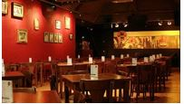 |
|
Republic Pub Bar
| 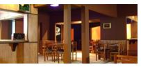 |
|
A8 Club – Pub
| 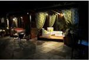 |
|
London Pub
| 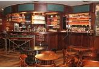 |
|
Nash Pub
Endereço: Avenida Floriano Peixoto, 8 - Centro |
Pizzaria Porto Alegre (Rodízio)
| 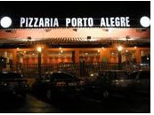 |
|
Pizzaria Minas Tchê ( Rodízio)
| 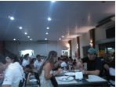 |
Endereço: Av. Cesário Alvim, 2150 - Nossa Senhora Aparecida |
Lista Completa
Pizzaria Casa Blanca Pizzaria Nippon DANNY PIZZA Próximas a UFU - Campus Santa Mônica Pizzaria Porto Alegre (Rodízio) FAST PIZZA EXPRESS Hippo Pizza Restaurante Branteko Restaurante e Pizzaria |
|
Chimarrão Churrascaria
| 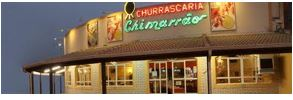 |
Endereço: Avenida João Naves de Ávila, 790
|
Churrascaria Tropeiro
| 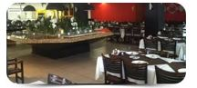 |
Endereço: Av. João Naves de Ávila, 1374 - Saraiva |
Carro de Boi – Bar e Restaurante
| 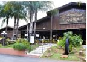 |
Endereço: Av. Rondon Pacheco, 3393 - Cazeca |
UAI TCHÊ CHURRASCARIA
| 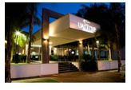 |
Endereço: Avenida Rondon Pacheco, 2978 Saraiva |
Pistachios Sorvetes
| 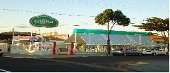 |
Endereço: Av. João Naves de Ávila, 2500 - Saraiva |
Bicota Sorveteria
| 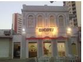 |
Endereço: Praça da Bicota, 33 - Fundinho
|
BONA FRUTA
| 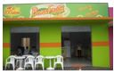 |
Endereço: Praça Adolfo Fonseca, 14 - Centro
|
Frutos do cerrado
Endereço: Av Segismundo Pereira, 1041 - Santa Mônica
|